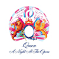
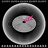
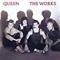
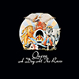
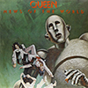
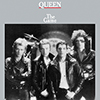

La banda tributo a Queen nos regala su espectáculo en la Plaza de toros de Las Ventas
El espacio Live Las Ventas, localizado en el interior de la Plaza de toros Monumental de Las Ventas, acoge el 16 de febrero uno de los mejores tributos a la emblemática banda británica de rock de Freddie Mercury. Un homenaje
que llega de la mano de la banda argentina God Save The Queen (Dios Salve a la Reina) liderada por el vocalista Pablo Padín. La banda que lidera este espectáculo se encuentra celebrando sus 25 años sobre los escenarios y que
cuenta con un parecido único tanto vocal como visual al cantante Freddie Mercury. Las filas del grupo las completan Dani Marcos en el papel de Brian May, Matías Albornoz en la batería y Ezequiel Tibaldo en el bajo.
Aclamados por la crítica y público tras haber actuado junto a grandes grupos como Aerosmith, Europe o Deep Purple, además de tomar parte en los festivales más grandes del mundo,
God Save The Queen no deja de sorprender agotando las entradas en todos los escenarios por los que pasa.
En este concierto se hará un repaso por todas las etapas de la carrera de Queen donde no faltarán temas como Bohemian Rhapsody
, We Will Rock You
o We Are The Champions
. Una gira que ha
alcanzado el éxito por escenarios de toda Europa, Estados Unidos, Asia y Latinoamérica.
Aquí os dejamos algunas canciones con sus letras:
| TÍTULO | ÁLBUM | PORTADA |
| Bohemian Rhapsody | A night at the opera (1975) |  |
| Don't stop me now | Jazz (1978) |  |
| I want to break free | The works (1984) |  |
| Somebody to love | A day at the races (1976) |  |
| We will rock you | News of the world (1977) |  |
| Another one bites the dust | The game (1980) |  |